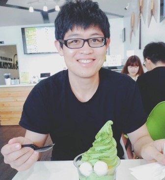

Chih-Hui (John) Ho
何智輝
San Diego, US
About
I am a first year master student in University of California San Diego. I recieved my bachelor degee from National Chiao Tung University in Taiwan. Before joining UCSD, I worked as a research assistant in Computer Vision Research Center in NCTU. I was an exchange student in University of Illinois at Urbana Champaign during my junior year and was a research intern in Cornell University. My areas of research interest are computer vision, image processing, machine learning, and deep learning.
Education
More....Work Experience
Research Assistance/ Computer Vision Research Center at National Chiao Tung University
Sep 2016 - Jun 2017
Research Projects
Selected Topics in Vision and Learning
University of California San Diego (UCSD) CSE 252C
March 2018 - June 2018
Publications
Rule-Based Optical Character Recognition for Serial Number on Renminbi Banknote
Yu-Shiuan Tsai, Yi-Yu Hsieh, Chih-Hui Ho, Ya-Ching Chang, Yao-Yuan Chang, Heng-Jyun Lin, Han-Yang Wang, Yu-Chen Chou, and Jen-Hui Chuang
Oral presentation at Electical Imaging 2018